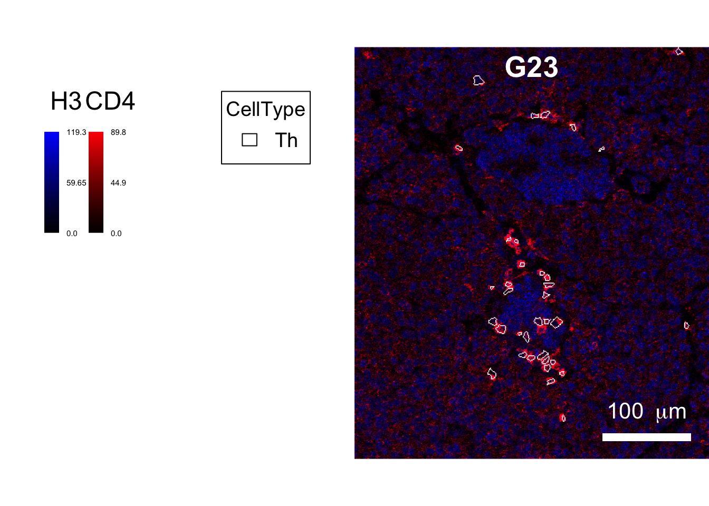
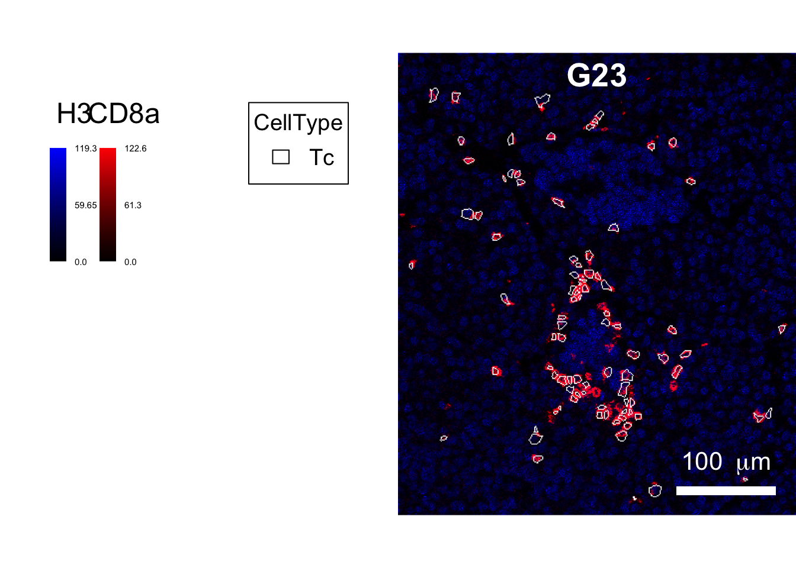
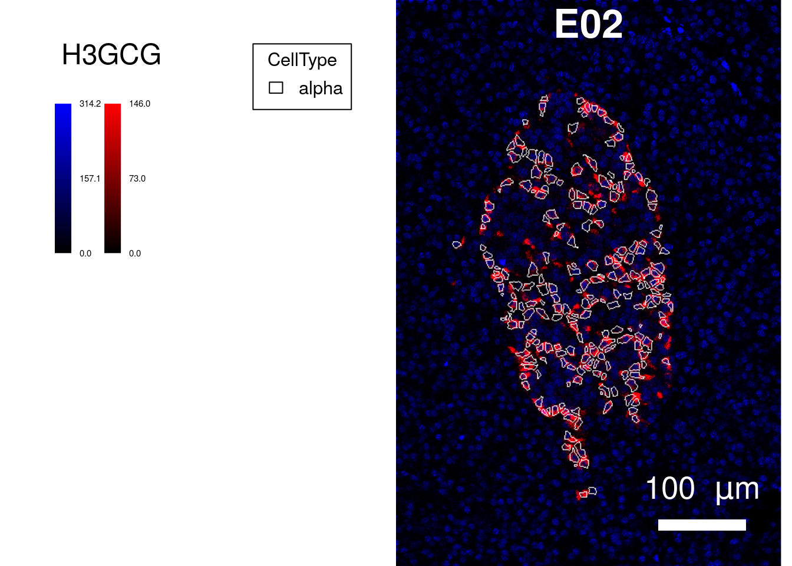
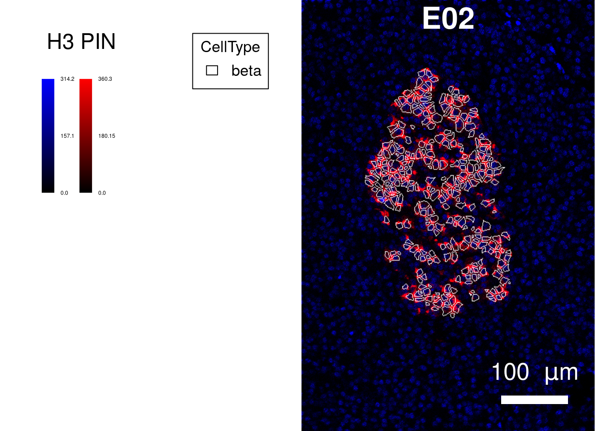

Last updated: 2020-08-20
Checks: 6 1
Knit directory: cytomapper_publication/
This reproducible R Markdown analysis was created with workflowr (version 1.6.2). The Checks tab describes the reproducibility checks that were applied when the results were created. The Past versions tab lists the development history.
The R Markdown file has unstaged changes. To know which version of the R Markdown file created these results, you’ll want to first commit it to the Git repo. If you’re still working on the analysis, you can ignore this warning. When you’re finished, you can run wflow_publish to commit the R Markdown file and build the HTML.
Great job! The global environment was empty. Objects defined in the global environment can affect the analysis in your R Markdown file in unknown ways. For reproduciblity it’s best to always run the code in an empty environment.
The command set.seed(20200602) was run prior to running the code in the R Markdown file. Setting a seed ensures that any results that rely on randomness, e.g. subsampling or permutations, are reproducible.
Great job! Recording the operating system, R version, and package versions is critical for reproducibility.
Nice! There were no cached chunks for this analysis, so you can be confident that you successfully produced the results during this run.
Great job! Using relative paths to the files within your workflowr project makes it easier to run your code on other machines.
Great! You are using Git for version control. Tracking code development and connecting the code version to the results is critical for reproducibility.
The results in this page were generated with repository version 4573326. See the Past versions tab to see a history of the changes made to the R Markdown and HTML files.
Note that you need to be careful to ensure that all relevant files for the analysis have been committed to Git prior to generating the results (you can use wflow_publish or wflow_git_commit). workflowr only checks the R Markdown file, but you know if there are other scripts or data files that it depends on. Below is the status of the Git repository when the results were generated:
Ignored files:
Ignored: .Rproj.user/
Ignored: data/PancreasData/pancreas_images.rds
Ignored: data/PancreasData/pancreas_masks.rds
Ignored: data/PancreasData/pancreas_sce.rds
Unstaged changes:
Modified: analysis/03-Figure_4.Rmd
Modified: analysis/03-Figure_5.Rmd
Modified: build.sh
Note that any generated files, e.g. HTML, png, CSS, etc., are not included in this status report because it is ok for generated content to have uncommitted changes.
These are the previous versions of the repository in which changes were made to the R Markdown (analysis/03-Figure_5.Rmd) and HTML (docs/03-Figure_5.html) files. If you’ve configured a remote Git repository (see ?wflow_git_remote), click on the hyperlinks in the table below to view the files as they were in that past version.
| File | Version | Author | Date | Message |
|---|---|---|---|---|
| Rmd | 4f07c26 | nilseling | 2020-07-23 | Adjusted contrasts |
| html | d47d609 | nilseling | 2020-07-22 | Recompiled from docker |
| Rmd | e7954d9 | nilseling | 2020-07-10 | Changed scale bar margin |
| html | e7954d9 | nilseling | 2020-07-10 | Changed scale bar margin |
| html | 6c7aea2 | nilseling | 2020-07-10 | Changed contrast for example images |
| html | a100544 | nilseling | 2020-07-10 | Recompiled htmls |
| html | 2e3df83 | nilseling | 2020-07-09 | Added Github icon and recompiled |
| html | 69f1501 | nilseling | 2020-07-09 | Small fixes and recompilation |
| html | 5476a61 | nilseling | 2020-07-08 | Recompiled files |
| Rmd | b0e748f | nilseling | 2020-07-08 | Changed contrast value for H3 and plot only one image |
| Rmd | c89a6d3 | nilseling | 2020-07-08 | Outline islet cells |
| Rmd | acce690 | nilseling | 2020-07-08 | Outline CD4 and CD8 T cells |
This script reproduces the analysis performed in Figure 5. Here, we will load the libraries and data for this figure:
library(cytomapper)
library(dplyr)
sce <- readRDS("data/PancreasData/pancreas_sce.rds")
masks <- readRDS("data/PancreasData/pancreas_masks.rds")
images <- readRDS("data/PancreasData/pancreas_images.rds")Here, we will highlight a few images that contain different cell-types and outline these using the segmentation masks. This analysis will visually confirm cell-type phenotyping and segmentation results.
We will first select images with a high count of CD4 and CD8 T cells.
# Select the image with the higest T cell density
selected_images <- as_tibble(colData(sce)) %>%
# Calculate for each image the area, number of T cells and T cell density
group_by(ImageName) %>%
summarise(width = mean(width),
height = mean(height),
ImageArea = (width * height) / 10^6,
TcellCount = sum(CellType == "Tc" | CellType == "Th"),
TcellDensity = TcellCount / ImageArea) %>%
arrange(desc(TcellDensity))`summarise()` ungrouping output (override with `.groups` argument)Now, we will visualize the top image and outline CD4 and CD8 T cells.
top_images <- selected_images$ImageName[1]
cur_images <- images[match(top_images, mcols(images)$ImageName)]
cur_masks <- masks[match(top_images, mcols(images)$ImageName)]
cur_sce <- sce[,sce$CellType == "Th"]
plotPixels(image = cur_images,
object = cur_sce,
mask = cur_masks,
img_id = "ImageName",
cell_id = "CellNumber",
colour_by = c("H3", "CD4"),
outline_by = "CellType",
colour = list(H3 = c("black", "blue"),
CD4 = c("black", "red"),
CellType = c(Th = "white")),
bcg = list(H3 = c(0, 1.5, 1),
CD4 = c(0, 6, 1)),
scale_bar = list(length = 100,
label = expression("100 " ~ mu * "m"),
margin = c(20, 20)),
legend = list(colour_by.title.cex = 1.5,
margin = 50))
# Save image
plotPixels(image = cur_images,
object = cur_sce,
mask = cur_masks,
img_id = "ImageName",
cell_id = "CellNumber",
colour_by = c("H3", "CD4"),
outline_by = "CellType",
colour = list(H3 = c("black", "blue"),
CD4 = c("black", "red"),
CellType = c(Th = "white")),
bcg = list(H3 = c(0, 1.5, 1),
CD4 = c(0, 6, 1)),
scale_bar = list(length = 100,
label = expression("100 " ~ mu * "m"),
margin = c(20, 20)),
legend = list(colour_by.title.cex = 1.5,
margin = 50),
save_plot = list(filename = "docs/final_figures/main/Fig_5A.png", scale = 3))
cur_sce <- sce[,sce$CellType == "Tc"]
plotPixels(image = cur_images,
object = cur_sce,
mask = cur_masks,
img_id = "ImageName",
cell_id = "CellNumber",
colour_by = c("H3", "CD8a"),
outline_by = "CellType",
colour = list(H3 = c("black", "blue"),
CD8a = c("black", "red"),
CellType = c(Tc = "white")),
bcg = list(H3 = c(0, 1.5, 1),
CD8a = c(0, 6, 1)),
legend = list(colour_by.title.cex = 1.5,
margin = 50),
scale_bar = list(length = 100,
label = expression("100 " ~ mu * "m"),
margin = c(20, 20)))
# Save image
plotPixels(image = cur_images,
object = cur_sce,
mask = cur_masks,
img_id = "ImageName",
cell_id = "CellNumber",
colour_by = c("H3", "CD8a"),
outline_by = "CellType",
colour = list(H3 = c("black", "blue"),
CD8a = c("black", "red"),
CellType = c(Tc = "white")),
bcg = list(H3 = c(0, 1.5, 1),
CD8a = c(0, 6, 1)),
scale_bar = list(length = 100,
label = expression("100 " ~ mu * "m"),
margin = c(20, 20)),
legend = list(colour_by.title.cex = 1.5,
margin = 50),
save_plot = list(filename = "docs/final_figures/main/Fig_5B.png", scale = 3))As a second example, we will select images with high alpha and beta cell count and perform a similar analysis as above. Due to the loss of beta cells, we will only select images of healthy patients.
# Select the three images with the higest alpha and beta cell density
selected_images <- as_tibble(colData(sce)) %>%
filter(stage == "Non-diabetic") %>%
group_by(ImageName) %>%
summarise(width = mean(width),
height = mean(height),
ImageArea = (width * height) / 10^6,
alphaCellCount = sum(CellType == "alpha"),
alphaCellDensity = alphaCellCount / ImageArea,
betaCellCount = sum(CellType == "beta"),
betaCellDensity = betaCellCount / ImageArea) %>%
mutate(alphaCellRank = rank(alphaCellDensity),
betaCellRank = rank(betaCellDensity),
rankSum = alphaCellRank + betaCellRank) %>%
arrange(desc(rankSum))`summarise()` ungrouping output (override with `.groups` argument)We will now outline alpha and beta cells.
top_images <- selected_images$ImageName[1]
cur_images <- images[match(top_images, mcols(images)$ImageName)]
cur_masks <- masks[match(top_images, mcols(images)$ImageName)]
cur_sce <- sce[,sce$CellType == "alpha"]
plotPixels(image = cur_images,
object = cur_sce,
mask = cur_masks,
img_id = "ImageName",
cell_id = "CellNumber",
colour_by = c("H3", "GCG"),
outline_by = "CellType",
colour = list(H3 = c("black", "blue"),
GCG = c("black", "red"),
CellType = c(alpha = "white")),
bcg = list(H3 = c(0, 6, 1),
GCG = c(0, 6, 1)),
scale_bar = list(length = 100,
label = expression("100 " ~ mu * "m"),
margin = c(40, 40)),
legend = list(colour_by.title.cex = 1.5,
margin = 50))
# Save image
plotPixels(image = cur_images,
object = cur_sce,
mask = cur_masks,
img_id = "ImageName",
cell_id = "CellNumber",
colour_by = c("H3", "GCG"),
outline_by = "CellType",
colour = list(H3 = c("black", "blue"),
GCG = c("black", "red"),
CellType = c(alpha = "white")),
bcg = list(H3 = c(0, 6, 1),
GCG = c(0, 6, 1)),
scale_bar = list(length = 100,
label = expression("100 " ~ mu * "m"),
margin = c(40, 40)),
legend = list(colour_by.title.cex = 1.5,
margin = 50),
save_plot = list(filename = "docs/final_figures/main/Fig_5C.png", scale = 3))
cur_sce <- sce[,sce$CellType == "beta"]
plotPixels(image = cur_images,
object = cur_sce,
mask = cur_masks,
img_id = "ImageName",
cell_id = "CellNumber",
colour_by = c("H3", "PIN"),
outline_by = "CellType",
colour = list(H3 = c("black", "blue"),
PIN = c("black", "red"),
CellType = c(beta = "white")),
bcg = list(H3 = c(0, 6, 1),
PIN = c(0, 6, 1)),
scale_bar = list(length = 100,
label = expression("100 " ~ mu * "m"),
margin = c(40, 40)),
legend = list(colour_by.title.cex = 1.5,
margin = 50))
# Save image
plotPixels(image = cur_images,
object = cur_sce,
mask = cur_masks,
img_id = "ImageName",
cell_id = "CellNumber",
colour_by = c("H3", "PIN"),
outline_by = "CellType",
colour = list(H3 = c("black", "blue"),
PIN = c("black", "red"),
CellType = c(beta = "white")),
bcg = list(H3 = c(0, 6, 1),
PIN = c(0, 6, 1)),
scale_bar = list(length = 100,
label = expression("100 " ~ mu * "m"),
margin = c(40, 40)),
legend = list(colour_by.title.cex = 1.5,
margin = 50),
save_plot = list(filename = "docs/final_figures/main/Fig_5D.png", scale = 3))
sessionInfo()R version 4.0.2 (2020-06-22)
Platform: x86_64-pc-linux-gnu (64-bit)
Running under: Ubuntu 20.04 LTS
Matrix products: default
BLAS/LAPACK: /usr/lib/x86_64-linux-gnu/openblas-openmp/libopenblasp-r0.3.8.so
locale:
[1] LC_CTYPE=en_US.UTF-8 LC_NUMERIC=C
[3] LC_TIME=en_US.UTF-8 LC_COLLATE=en_US.UTF-8
[5] LC_MONETARY=en_US.UTF-8 LC_MESSAGES=C
[7] LC_PAPER=en_US.UTF-8 LC_NAME=C
[9] LC_ADDRESS=C LC_TELEPHONE=C
[11] LC_MEASUREMENT=en_US.UTF-8 LC_IDENTIFICATION=C
attached base packages:
[1] parallel stats4 stats graphics grDevices utils datasets
[8] methods base
other attached packages:
[1] dplyr_1.0.1 cytomapper_1.1.2
[3] SingleCellExperiment_1.11.6 SummarizedExperiment_1.19.6
[5] DelayedArray_0.15.7 matrixStats_0.56.0
[7] Matrix_1.2-18 Biobase_2.49.0
[9] GenomicRanges_1.41.6 GenomeInfoDb_1.25.10
[11] IRanges_2.23.10 S4Vectors_0.27.12
[13] BiocGenerics_0.35.4 EBImage_4.31.0
[15] workflowr_1.6.2
loaded via a namespace (and not attached):
[1] viridis_0.5.1 viridisLite_0.3.0 svgPanZoom_0.3.4
[4] shiny_1.5.0 sp_1.4-2 GenomeInfoDbData_1.2.3
[7] vipor_0.4.5 tiff_0.1-5 yaml_2.2.1
[10] gdtools_0.2.2 pillar_1.4.6 backports_1.1.8
[13] lattice_0.20-41 glue_1.4.1 digest_0.6.25
[16] RColorBrewer_1.1-2 promises_1.1.1 XVector_0.29.3
[19] colorspace_1.4-1 htmltools_0.5.0 httpuv_1.5.4
[22] pkgconfig_2.0.3 raster_3.3-13 zlibbioc_1.35.0
[25] purrr_0.3.4 xtable_1.8-4 fftwtools_0.9-8
[28] scales_1.1.1 svglite_1.2.3.2 whisker_0.4
[31] jpeg_0.1-8.1 later_1.1.0.1 git2r_0.27.1
[34] tibble_3.0.3 generics_0.0.2 ggplot2_3.3.2
[37] ellipsis_0.3.1 magrittr_1.5 crayon_1.3.4
[40] mime_0.9 evaluate_0.14 fs_1.5.0
[43] beeswarm_0.2.3 shinydashboard_0.7.1 tools_4.0.2
[46] lifecycle_0.2.0 stringr_1.4.0 munsell_0.5.0
[49] locfit_1.5-9.4 compiler_4.0.2 systemfonts_0.2.3
[52] rlang_0.4.7 grid_4.0.2 RCurl_1.98-1.2
[55] rstudioapi_0.11 htmlwidgets_1.5.1 bitops_1.0-6
[58] rmarkdown_2.3 gtable_0.3.0 codetools_0.2-16
[61] abind_1.4-5 R6_2.4.1 gridExtra_2.3
[64] knitr_1.29 fastmap_1.0.1 rprojroot_1.3-2
[67] stringi_1.4.6 ggbeeswarm_0.6.0 Rcpp_1.0.5
[70] vctrs_0.3.2 png_0.1-7 tidyselect_1.1.0
[73] xfun_0.16